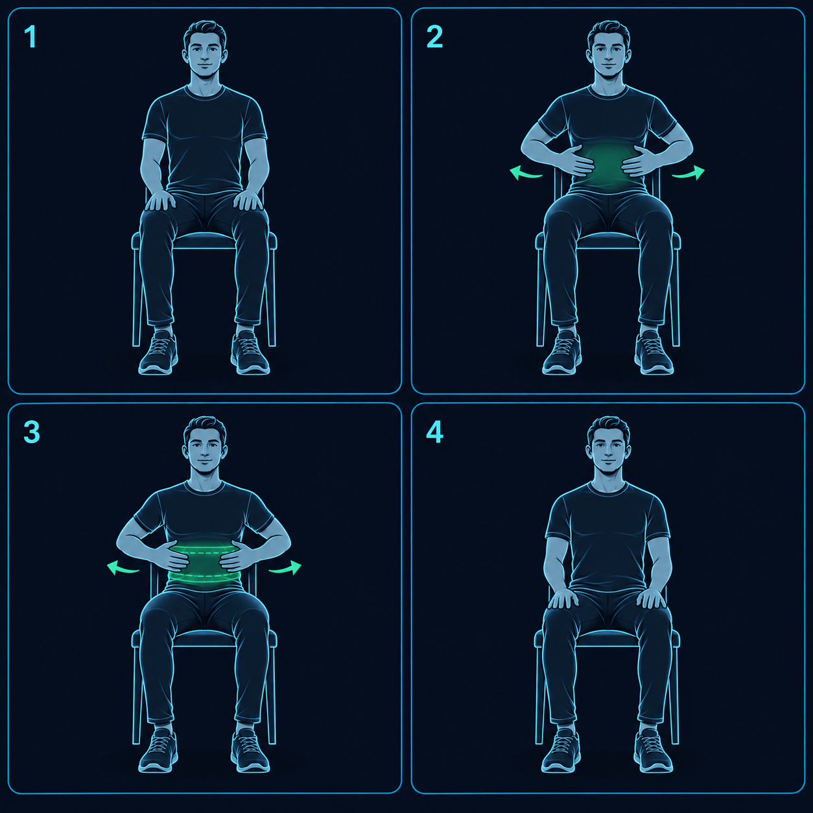
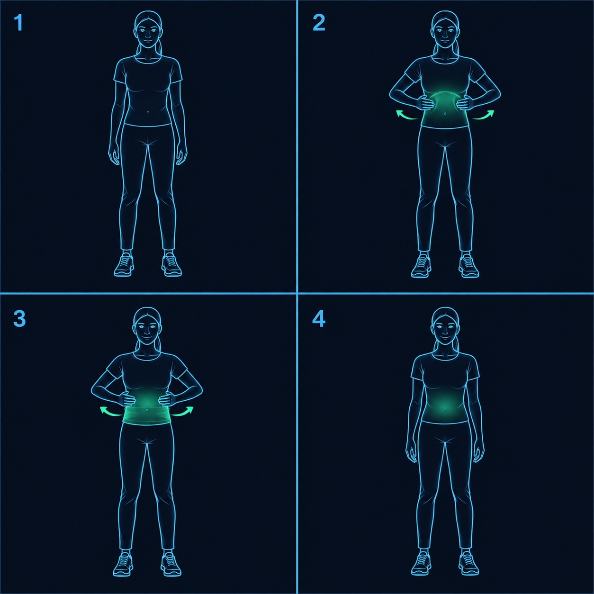
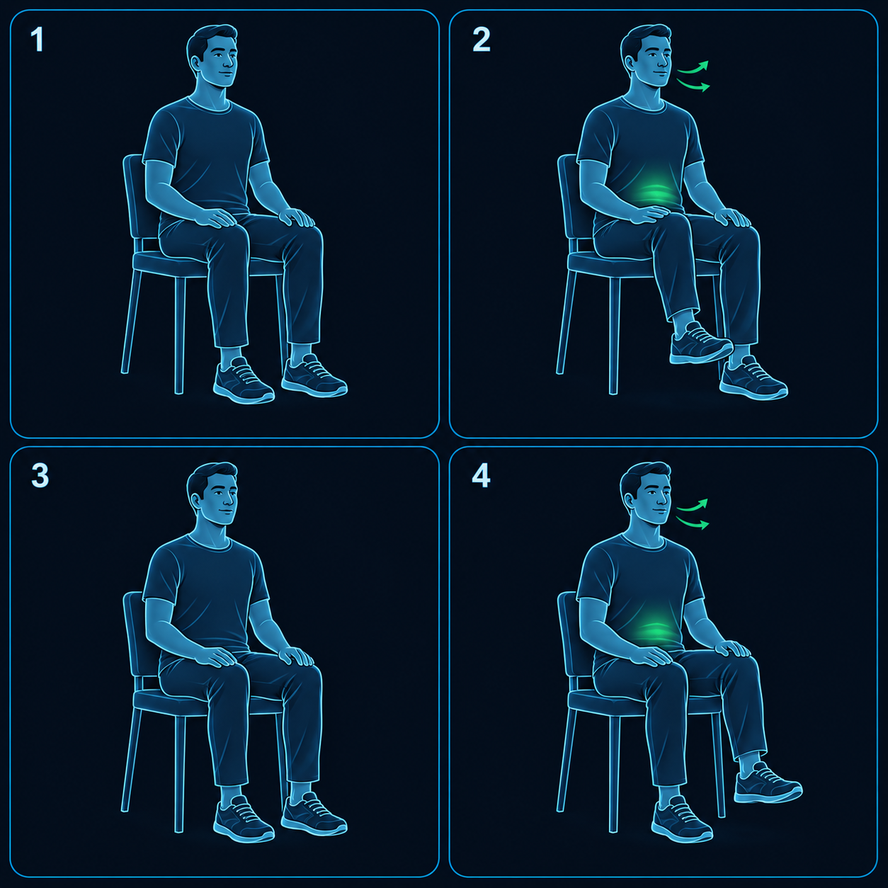
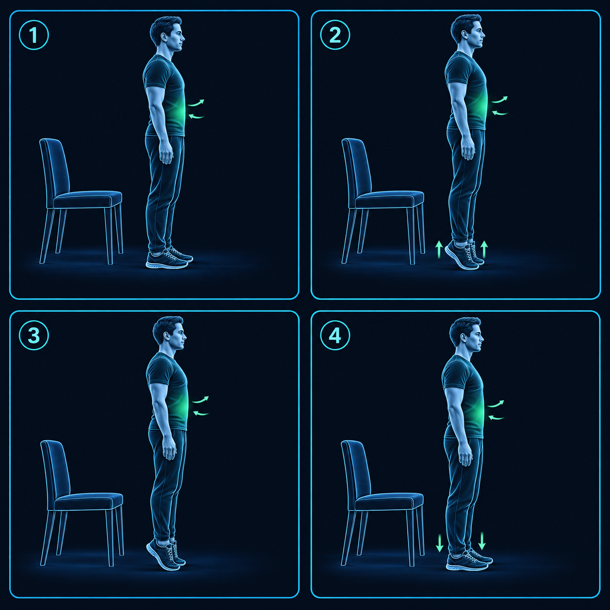
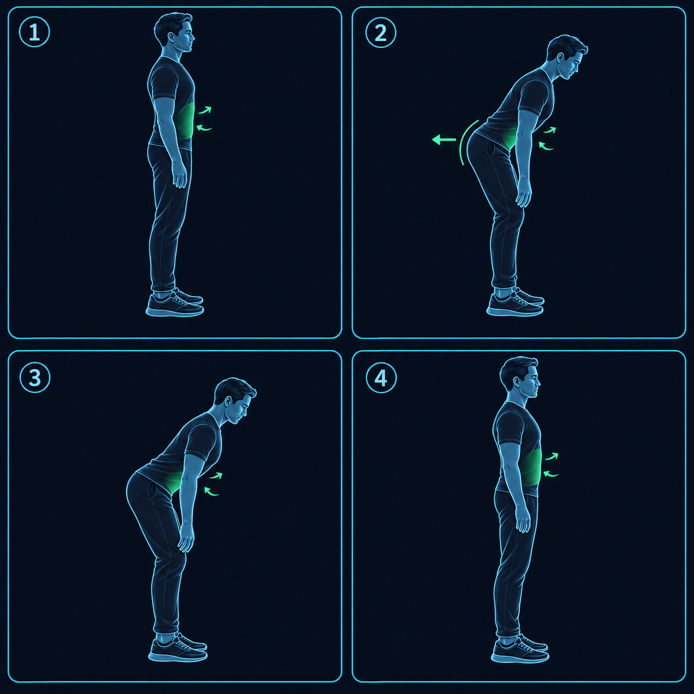
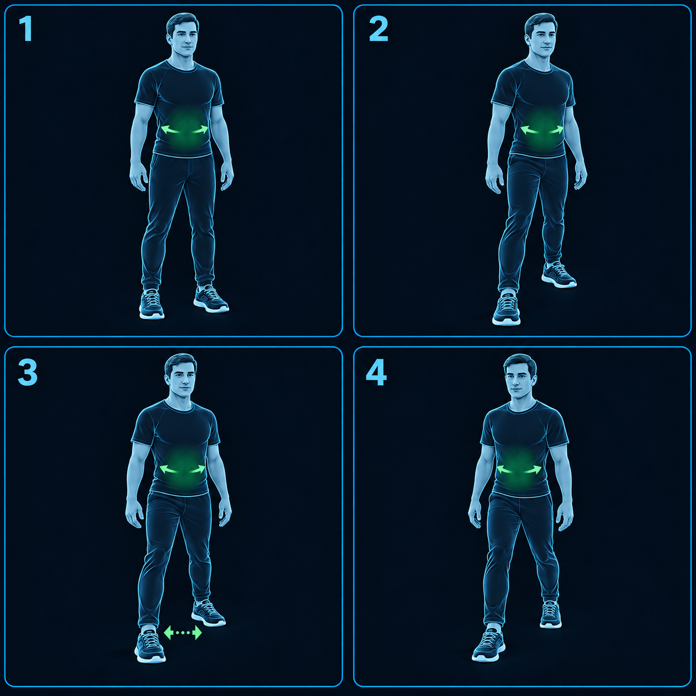
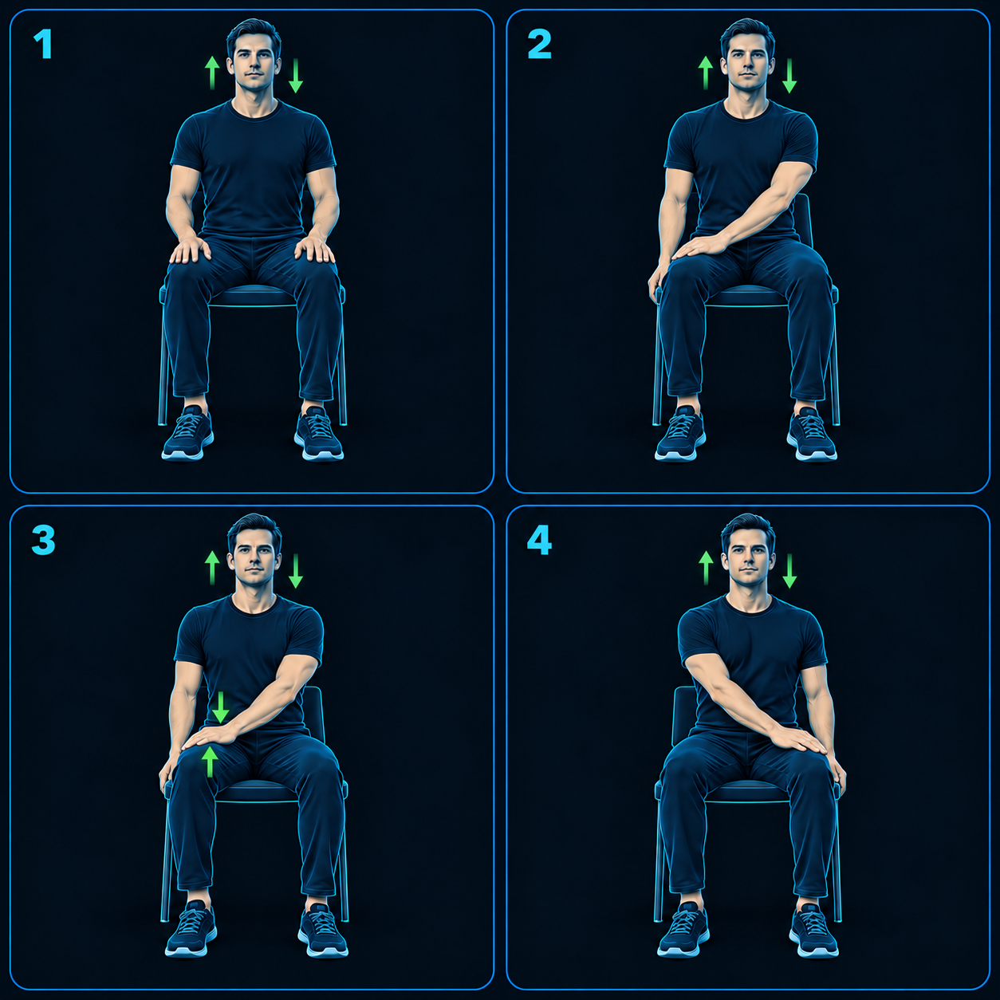
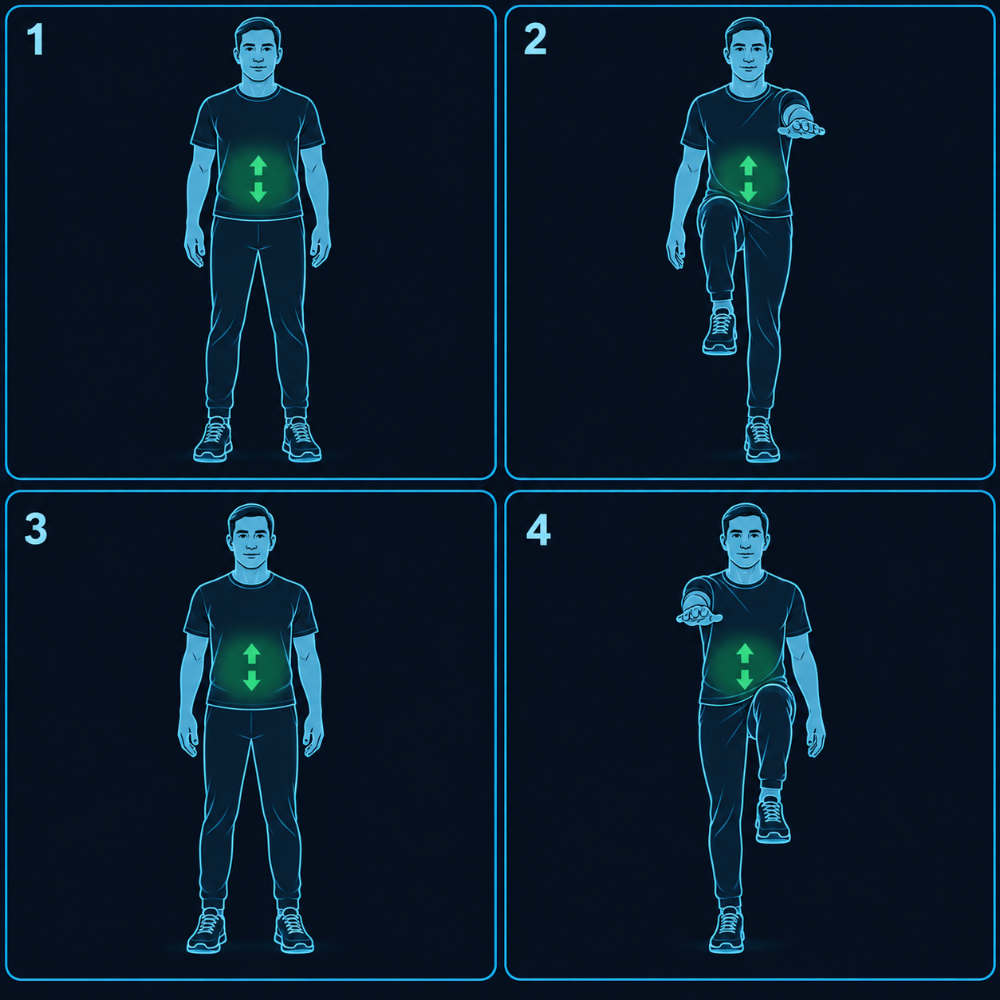

CoreFlow · E15 · 10/10/2026
Bracing: etapas de execução
Oito exercícios, quatro quadros por exercício. Leia os quadros da esquerda para a direita, de cima para baixo. As legendas descrevem a ação; o tempo e as repetições seguem a semana escolhida.
Imagens candidatas para revisão de Rafael. A implementação no aplicativo permanece pendente.
Plano com fases e checkpoints · Documento de referência
BR-01 · Bracing sentado

- Pés apoiados e tronco ereto.
- Inspire suavemente.
- Firme o abdômen e continue respirando.
- Relaxe completamente.
Continue respirando. Clique na imagem para ampliar.
BR-02 · Bracing em pé

- Pés na largura do quadril; joelhos destravados.
- Inspire suavemente.
- Ative o abdômen mantendo a postura e a respiração.
- Relaxe.
Continue respirando. Clique na imagem para ampliar.
BR-03 · Marcha sentada

- Sente com ambos os pés apoiados.
- Eleve pouco o pé direito sem inclinar o tronco.
- Retorne o pé ao chão.
- Repita com a perna esquerda.
Continue respirando. Clique na imagem para ampliar.
BR-04 · Elevação de calcanhares

- Fique em pé com pés paralelos.
- Eleve os calcanhares devagar.
- Mantenha o controle, respirando.
- Baixe os calcanhares lentamente.
Continue respirando. Clique na imagem para ampliar.
BR-05 · Inclinação do quadril

- Postura ereta e joelhos levemente flexionados.
- Leve o quadril para trás.
- Incline o tronco 15–30° a partir do quadril, coluna neutra.
- Retorne de forma controlada.
Continue respirando. Clique na imagem para ampliar.
BR-06 · Base desencontrada

- Base estável e largura suficiente.
- Coloque um pé meio passo à frente; ambos apoiados.
- Transfira pouco peso sem girar o tronco.
- Troque o pé à frente.
Continue respirando. Clique na imagem para ampliar.
BR-07 · Coxa contra mão oposta

- Sente com tronco ereto e pés apoiados.
- Mão esquerda sobre a parte superior da coxa direita, perto do joelho.
- Coxa sobe contra resistência suave da mão; pouco ou nenhum movimento.
- Solte e inverta os lados.
Continue respirando. Clique na imagem para ampliar.
BR-08 · Marcha com braço oposto

- Estabilize o tronco em pé.
- Eleve discretamente joelho direito e braço esquerdo.
- Retorne à base.
- Repita joelho esquerdo e braço direito.
Continue respirando. Clique na imagem para ampliar.